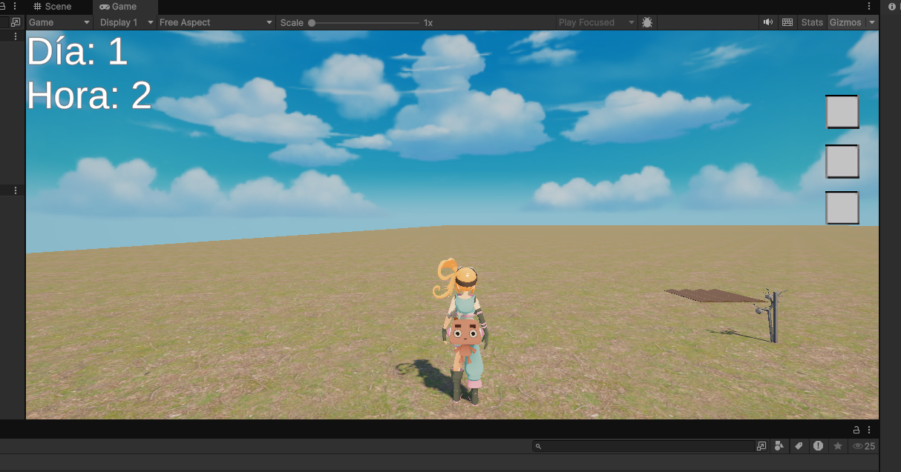
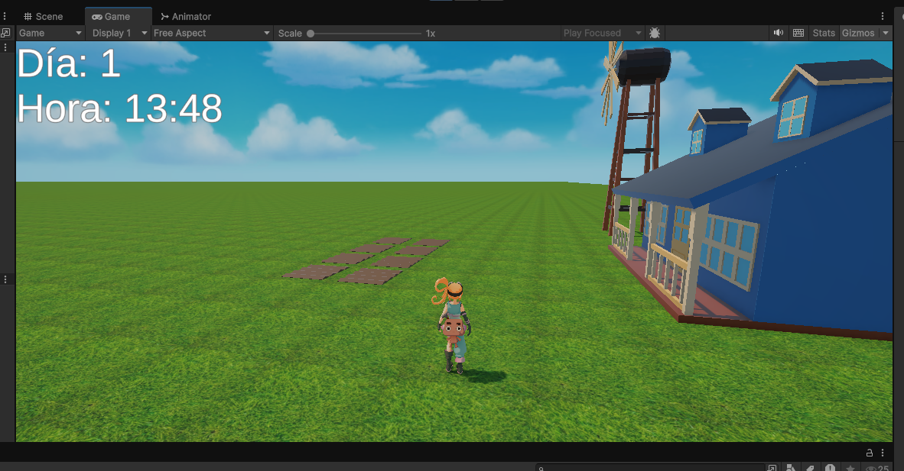
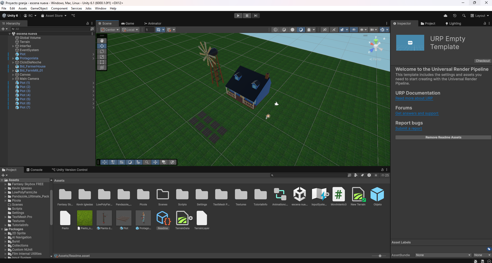

Grajna
Tu abuelo te heredó el campo en la Pampa, tu trabajo es el de encargarte del campo que una vez fue de tu abuelo, en su casa habían semillas de varias plantas, y así es como decidiste empezar tu vida como agricultora allí.
¿Qué es Grajna?
Es un videojuego de granja hecho en Unity, en el que posees un sistema de parcelas en las que podés plantar tomates, y en un futuro muchas plantas más. Además hay un sistema de día y noche y un inventario en el que guardás las semillas de tomate y los tomates. El jugador o la jugadora puede ir a su casa para dormir y pasar al siguiente día.
Descargá Grajna acá
Link de descarga (Google Drive, Windows)
Integrantes del proyecto
Florencia Juárez
Santiago Silva
Matías Nahuel González Sandoval
Gameplay de Grajna
¿Cómo se creó Grajna?
 Grajna se origina desde el proyecto de "Juego de Miedito", el cual originalmente
iba a ser un videojuego de granja en 2D, sin embargo, posteriormente nos enteraríamos que ibamos a tener que
hacer un proyecto en Unity y pensamos que sería una buena idea realizar un prototipo de juego de granja en dicho
motor de creación de videojuegos, en un principio también se pensaba en hacerlo en dos dimensiones, sin embargo
uno de los requerimientos de los proyectos que se hicieran en Unity era que fueran en tres dimensiones, es así
que la escala del proyecto cambió drásticamente, puesto a que no teníamos ninguna experiencia en el desarrollo de
videojuegos en 3D. Aún así esto permitió que adquirieramos muchos conocimientos respecto a cómo funciona
la programación y el uso de Unity Engine, motor de creación de videojuegos que es muy completo en lo que
brinda a un desarrollador o desarrolladora de videojuegos pero que requiere de mucho aprendizaje para poder
sacar el máximo partido del mismo.
Grajna se origina desde el proyecto de "Juego de Miedito", el cual originalmente
iba a ser un videojuego de granja en 2D, sin embargo, posteriormente nos enteraríamos que ibamos a tener que
hacer un proyecto en Unity y pensamos que sería una buena idea realizar un prototipo de juego de granja en dicho
motor de creación de videojuegos, en un principio también se pensaba en hacerlo en dos dimensiones, sin embargo
uno de los requerimientos de los proyectos que se hicieran en Unity era que fueran en tres dimensiones, es así
que la escala del proyecto cambió drásticamente, puesto a que no teníamos ninguna experiencia en el desarrollo de
videojuegos en 3D. Aún así esto permitió que adquirieramos muchos conocimientos respecto a cómo funciona
la programación y el uso de Unity Engine, motor de creación de videojuegos que es muy completo en lo que
brinda a un desarrollador o desarrolladora de videojuegos pero que requiere de mucho aprendizaje para poder
sacar el máximo partido del mismo.
Galería
  ¿Cómo funciona Grajna?
Son varios los scripts que componen el prototipo que podés descargar:
using UnityEngine;
public class Plot : MonoBehaviour
{
public GameObject currentPlant; // La planta que tiene sembrada
public Transform plantPoint; // Dónde colocar la planta
public Inventario inventario;
public void PlantSeed(GameObject plantPrefab)
{
if (currentPlant == null)
{
currentPlant = Instantiate(plantPrefab, plantPoint.position, Quaternion.identity);
}
}
public void TryHarvest()
{
if (currentPlant != null)
{
var plant = currentPlant.GetComponent<PlantMultipleModels>();
if (plant != null && plant.IsFullyGrown())
{
plant.Harvest();
currentPlant = null;
inventario.addItem("tomate", 1); // Añadir un tomate al inventario
inventario.addItem("semilla_tomate", 2); // Añadir dos semillas de tomate al inventario
}
}
}
}
using UnityEngine;
public class PlantMultipleModels : MonoBehaviour
{
public GameObject[] growthModels; // Modelos: semilla, brote, madura
public int daysToGrow = 3; // Cuántos días tarda en crecer
private int currentDay = 0;
private void Start()
{
ActivateModel(0); // Empieza con la semilla
GameTime.Instance.OnNewDay += Grow; // Suscribe al evento de día nuevo
}
void Grow()
{
currentDay++; // Avanza un día
int stage = Mathf.Min(currentDay, growthModels.Length - 1); // Calcula en qué etapa está
ActivateModel(stage); // Muestra la etapa correcta
}
void ActivateModel(int index)
{
for (int i = 0; i growthModels.Length; i++)
{
growthModels[i].SetActive(i == index); // Activa solo el modelo correcto
}
}
public bool IsFullyGrown() => currentDay >= daysToGrow; // ¿Ya creció?
public void Harvest()
{
if (IsFullyGrown()) Destroy(gameObject); // Si está lista, destruye (se cosechó)
}
private void OnDestroy()
{
GameTime.Instance.OnNewDay -= Grow; // Se desuscribe al destruirse
}
}
using System.Collections;
using System.Collections.Generic;
using UnityEngine;
public class Movimiento : MonoBehaviour
{
public float velocidadMovimiento = 5f; // Velocidad de movimiento normal del jugador
public float velocidadCarrera = 10f; // Velocidad de movimiento al correr
public Animator animator;
private CharacterController characterController;
private float velocidadVertical = 0f;
private int saltosRestantes = 10; // Número de saltos restantes (1 para el salto simple y 1 para el doble salto)
public Rigidbody rb;
public float jumpheight = 3;
public Transform groundCheck;
public float groundDistance = 0.1f;
public LayerMask groundMask;
bool isGrounded;
private void Start()
{
// Obtener el componente CharacterController adjunto a este GameObject
characterController = GetComponent<CharacterController>();
}
void Update()
{
// Obtener las entradas de teclado para el movimiento
float movimientoHorizontal = Input.GetAxis("Horizontal");
float movimientoVertical = Input.GetAxis("Vertical");
// Aplicar la gravedad
if (characterController.isGrounded)
{
velocidadVertical = -0.5f; // Restablecer la velocidad vertical cuando el jugador toca el suelo
saltosRestantes = 10; // Reiniciar los saltos disponibles al tocar el suelo
}
else
{
// Aplicar la gravedad constante cuando el jugador está en el aire
velocidadVertical += Physics.gravity.y * Time.deltaTime;
}
// Saltar
if (Input.GetButtonDown("Jump") && saltosRestantes > 0)
{
// Calcular la velocidad vertical necesaria para realizar un salto (ajustar el valor 3.0f según sea necesario)
velocidadVertical = Mathf.Sqrt(2f * 3.0f * Mathf.Abs(Physics.gravity.y));
saltosRestantes--; // Reducir el número de saltos restantes
}
// Verificar si el jugador está corriendo (presionando la tecla "Shift")
float currentSpeed = Input.GetKey(KeyCode.LeftShift) ? velocidadCarrera : velocidadMovimiento;
// Crear un vector de movimiento basado en la dirección de la cámara
Vector3 movimiento = (transform.forward * movimientoVertical + transform.right * movimientoHorizontal) * currentSpeed;
// Aplicar la velocidad vertical al movimiento
movimiento.y = velocidadVertical;
// Mover al jugador utilizando el CharacterController
characterController.Move(movimiento * Time.deltaTime);
animator.SetFloat("VelX", movimientoHorizontal);
animator.SetFloat("VelY", movimientoVertical);
isGrounded = Physics.CheckSphere(groundCheck.position, groundDistance, groundMask);
if (Input.GetKey("space") && isGrounded)
{
animator.Play("Jump");
}
}
}
using UnityEngine;
using UnityEngine.UI;
using System.Collections;
using System.Collections.Generic;
using TMPro;
public class Inventario : MonoBehaviour
{
// Declaro el listado que contiene el tipo de los objetos que posee el jugador.
public List<string> tipo = new List<string>();
// Este otro listado contiene las cantidades de cada objeto que posee el jugador
public List<int> cantidad = new List<int>();
// Acá declaro un array que contiene las ranuras del inventario como interfaz
public GameObject[] slots;
public Sprite icon1; // Icono de semilla_tomate
public Sprite icon2; // Icono de tomate
public Sprite empty_icon; // Icono de la ranura de inventario vacía
private bool inventoryOpen; // Variable booleana que me dice sí el inventario está abierto o no
void Start()
{
hideInventory();
}
void hideInventory() // Función que esconde el inventario al jugador
{
inventoryOpen = false;
for (int i = 0; i < slots.Length; i++)
{
slots[i].SetActive(false);
}
}
void showInventory() // Función que muestra el inventario al jugador
{
inventoryOpen = true;
for (int i = 0; i < slots.Length; i++)
{
slots[i].SetActive(true);
}
if (tipo.Count > 0) // Sí el inventario tiene objetos, dibujarlos en la interfaz
{
for (int i = 0; i < tipo.Count; i++)
{
if (tipo[i] == "semilla_tomate")
{
slots[i].GetComponent<Image>().sprite = icon1; // Asignamos un icono al objeto
}
if (tipo[i] == "tomate")
{
slots[i].GetComponent<Image>().sprite = icon2; // Asignamos un icono al objeto
}
slots[i].transform.Find("Cantidad").GetComponent<TMP_Text>().text = cantidad[i].ToString(); // Mostramos la cantidad que tenemos de dicho objeto
}
if (tipo.Count < slots.Length)
{
for (int i = tipo.Count; i < slots.Length; i++)
{
slots[i].GetComponent<Image>().sprite = empty_icon; // Icono de la ranura vacia
slots[i].transform.Find("Cantidad").GetComponent<TMP_Text>().text = ""; // Ya no mostramos la cantidad de objetos porque no los hay
}
}
}
else // Sí el inventario ya no tiene objetos, hacemos que la interfaz del inventario no muestre ningún objeto "fantasma"
{
for (int i = 0; i < slots.Length; i++)
{
slots[i].GetComponent<Image>().sprite = empty_icon; // Icono de la ranura vacia
slots[i].transform.Find("Cantidad").GetComponent<TMP_Text>().text = ""; // Ya no mostramos la cantidad de objetos porque no los hay
}
}
}
public void addItem(string item, int quantity) // Función que se encarga de añadir un objeto al inventario
{
if (tipo.Contains(item))
{
cantidad[tipo.IndexOf(item)] += quantity;
}
else
{
tipo.Add(item);
cantidad.Add(quantity);
}
}
public void removeItem(string item, int quantity = 1) // Función que se encarga de remover un objeto del inventario
{
int index_item = tipo.IndexOf(item); // Agarramos el índice del objeto que vamos a remover
if (cantidad[index_item] > quantity)
{
cantidad[index_item] -= quantity; // Removemos la cantidad del objeto
}
else
{
// Removemos el objeto del inventario
tipo.RemoveAt(index_item);
cantidad.RemoveAt(index_item);
}
}
void Update() // Función que se activa cada frame
{
if (Input.GetKeyDown(KeyCode.I)) // Al tocar la tecla I
{
if (inventoryOpen) // Sí el inventario está abierto
{
hideInventory();
}
else // Sí el inventario NO está abierto
{
showInventory();
}
}
}
}
using UnityEngine;
using System; // Permite usar eventos y otros elementos como Action
using TMPro;
public class GameTime : MonoBehaviour
{
public void TriggerNewDay()
{
OnNewDay?.Invoke(); // Llama a todos los que estén suscritos al evento OnNewDay
}
public static GameTime Instance; // Variable estática para que otros scripts puedan acceder a esta clase
public int currentDay = 1; // Día actual en el juego (entero)
public float secondsPerDay = 10f; // Cuántos segundos reales equivalen a un "día" en el juego (número decimal)
private float timer; // Variable interna para contar el tiempo que pasa
public event Action OnNewDay; // Evento que se ejecuta cuando pasa un nuevo día
public CicloDiaNoche cicloDiaNoche; // Asigna tu CicloDiaNoche en el inspector
public TMP_Text ui_text; // Asigna tu TMP_Text en el inspector
private void Awake() // Función que se llama automáticamente al iniciar el script
{
if (Instance == null) Instance = this; // Guarda una única instancia accesible desde cualquier script
}
void Update() // Se llama automáticamente una vez por frame
{
timer += Time.deltaTime; // Aumenta el temporizador según el tiempo real que pasó
if (cicloDiaNoche == null || ui_text == null) return;
int hora = Mathf.FloorToInt(cicloDiaNoche.Hora);
int minutos = Mathf.FloorToInt((cicloDiaNoche.Hora - hora) * 60f);
ui_text.text = "Día: " + cicloDiaNoche.Dia + "\nHora: " + hora.ToString("00") + ":" + minutos.ToString("00");
if (timer >= secondsPerDay) // Si pasó el tiempo necesario para un día...
{
timer = 0f; // Reinicia el temporizador
currentDay++; // Avanza un día
OnNewDay?.Invoke(); // Llama a todos los que estén suscritos al evento OnNewDay
}
}
}
using UnityEngine;
public class DormirInteractuable : MonoBehaviour
{
public CicloDiaNoche cicloDiaNoche; // Asigna el CicloDiaNoche en el inspector
public float distanciaInteraccion = 2f; // Distancia máxima para interactuar
public GameObject canvasdormir;
public GameObject teclaE;
void Start()
{
if (canvasdormir != null)
{
canvasdormir.SetActive(false); // Asegúrate de que el panel esté oculto al inicio
}
else
{
Debug.LogWarning("canvasdormir no está asignado en el inspector.");
}
}
void Update()
{
GameObject jugador = GameObject.FindGameObjectWithTag("Player");
if (jugador == null) return;
float distancia = Vector3.Distance(transform.position, jugador.transform.position);
if (distancia <= distanciaInteraccion && Input.GetKeyDown(KeyCode.E)) //Con la tecla E pasa el dia
{
Dormir();
}
}
public void Dormir()
{
if (canvasdormir != null)
{
canvasdormir.SetActive(true); // Muestra el panel de dormir
}
else
{
Debug.LogWarning("canvasdormir no está asignado en el inspector.");
return; // Sale si no hay panel para mostrar
}
if (cicloDiaNoche != null)
{
cicloDiaNoche.Dia++;
cicloDiaNoche.Hora = 6;
}
if (GameTime.Instance != null)
{
Debug.Log("Invocando OnNewDay");
GameTime.Instance.TriggerNewDay();
}
else
{
Debug.LogWarning("GameTime.Instance es null");
}
Invoke(nameof(EsconderPanel), 1.5f); // Esconde el panel después de 1.5 segundos
}
void EsconderPanel()
{
if (canvasdormir != null)
canvasdormir.SetActive(false);
}
}
using UnityEngine;
public class CicloDiaNoche : MonoBehaviour
{
[Range(0.0f, 24f)] public float Hora = 12;
public int Dia = 1; // <-- Agregado: contador de días
public Transform Sol;
public float DuracionDelDiaEnMinutos = 1;
private float SolX;
private void Update()
{
Hora += Time.deltaTime * (24 / (60 * DuracionDelDiaEnMinutos));
if (Hora >= 24)
{
Hora = 0;
Dia++; // <-- Agregado: suma un día cuando pasa de 24 horas
}
RotacionSol();
}
void RotacionSol()
{
SolX = 15 * (Hora - 6); // Así a las 12, SolX = 90 (Sol arriba)
Sol.localEulerAngles = new Vector3(SolX, 0, 0);
if (Hora < 6 || Hora > 18)
{
Sol.GetComponent<Light>().intensity = 0;
}
else
{
Sol.GetComponent<Light>().intensity = 1;
}
}
}
using UnityEngine;
public class CamaraMouse : MonoBehaviour
{
public Transform objetivo; // El personaje a seguir
public float distancia = 5f; // Distancia detrás del personaje
public float altura = 2f; // Altura sobre el personaje
public float sensibilidadX = 2f;
public float sensibilidadY = 2f;
public float minY = -40f;
public float maxY = 80f;
public float suavizado = 5f; // Velocidad de retorno
private float rotacionY = 0f;
private float rotacionX = 10f;
private float rotacionXInicial = 10f;
void Start()
{
Cursor.lockState = CursorLockMode.Locked;
Vector3 angulos = objetivo.eulerAngles;
rotacionY = angulos.y;
rotacionX = rotacionXInicial;
}
void Update()
{
if (Input.GetMouseButtonDown(1))
Cursor.lockState = CursorLockMode.Locked;
if (Input.GetMouseButtonUp(1))
Cursor.lockState = CursorLockMode.None;
}
void LateUpdate()
{
if (objetivo == null) return;
// Solo rota la cámara si el botón derecho está presionado
if (Input.GetMouseButton(1))
{
rotacionY += Input.GetAxis("Mouse X") * sensibilidadX;
rotacionX -= Input.GetAxis("Mouse Y") * sensibilidadY;
rotacionX = Mathf.Clamp(rotacionX, minY, maxY);
}
else
{
// Vuelve suavemente detrás del personaje y a la altura inicial
rotacionY = Mathf.LerpAngle(rotacionY, objetivo.eulerAngles.y, Time.deltaTime * suavizado);
rotacionX = Mathf.Lerp(rotacionX, rotacionXInicial, Time.deltaTime * suavizado);
}
Quaternion rotacion = Quaternion.Euler(rotacionX, rotacionY, 0);
Vector3 offset = rotacion * new Vector3(0, 0, -distancia);
Vector3 posicionDeseada = objetivo.position + Vector3.up * altura + offset;
transform.position = posicionDeseada;
transform.LookAt(objetivo.position + Vector3.up * altura);
}
}